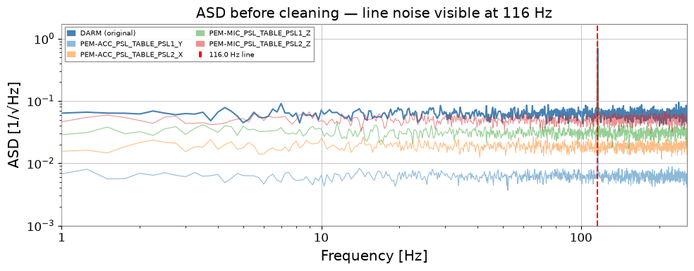
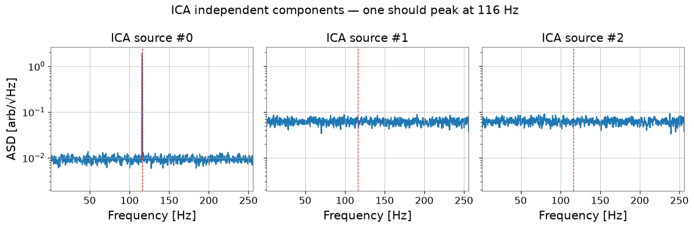
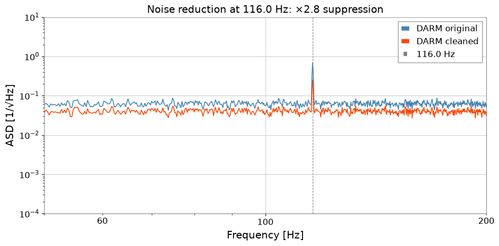

ケーススタディ: Bruco と ICA によるノイズ削減#
このノートブックでは、実際の干渉計コミッショニングで使われる エンドツーエンドのノイズ削減ワークフロー を示します：
Bruco — ブルートフォースコヒーレンス スキャンで最相関の補助チャンネルを特定
ICA — 独立成分分析でノイズ源を分離
ノイズ差し引き — DARM からノイズ寄与を除去し、ASD を比較
これは O4b コミッショニング（DARM 116 Hz ライン調査など）で使われたワークフローを再現しています。 物理的な狙いは、「どのセンサに線が見えるか」から一歩進んで、「どの潜在ノイズ源なら DARM から差し引いても他の構造を壊さないか」を判断することです。
前提条件：以下に慣れていること
Bruco チュートリアル — Bruco の基礎
PCA/ICA チュートリアル — 分解の基礎
準備#
import warnings
warnings.filterwarnings("ignore", category=UserWarning)
warnings.filterwarnings("ignore", category=DeprecationWarning)
import warnings
with warnings.catch_warnings():
warnings.simplefilter('ignore')
# ruff: noqa: I001
import matplotlib.pyplot as plt
import numpy as np
from astropy import units as u
from gwexpy.analysis import Bruco
from gwexpy.timeseries import TimeSeries, TimeSeriesDict, TimeSeriesMatrix
1. モックデータ生成#
DARM チャンネルに以下が混入するシナリオをシミュレートします：
広帯域ガウスノイズ（バックグラウンド雑音フロア）
環境センサーから漏れた 116 Hz ラインノイズ
4 つの PEM（Physical Environment Monitor）補助チャンネルは、それぞれ異なる割合で同じ 116 Hz ラインを含みます。 これは O4b コミッショニングの実際のケースを模倣しています。
rng = np.random.default_rng(42)
fs = 512 # sample rate [Hz]
T = 64.0 # duration [s]
n = int(fs * T)
t = np.arange(n) / fs
FREQ_LINE = 116.0 # Hz — the line noise we want to remove
# ----- Independent sources -----
src_line = np.sin(2 * np.pi * FREQ_LINE * t) # coherent line noise
src_broad = rng.normal(0, 1, n) # broadband floor noise
# ----- DARM: broadband + line leakage -----
DARM_LINE_COUPLING = 0.5
darm_noise = src_broad + DARM_LINE_COUPLING * src_line
target = TimeSeries(
darm_noise, dt=1 / fs, unit=u.dimensionless_unscaled,
name="K1:CAL-CS_PROC_DARM_STRAIN_DBL_DQ", t0=0,
)
# ----- 4 auxiliary channels (different line content) -----
aux_configs = {
"K1:PEM-ACC_PSL_TABLE_PSL1_Y": (0.9, 0.1), # 90% line, 10% noise
"K1:PEM-ACC_PSL_TABLE_PSL2_X": (0.7, 0.3),
"K1:PEM-MIC_PSL_TABLE_PSL1_Z": (0.5, 0.5),
"K1:PEM-MIC_PSL_TABLE_PSL2_Z": (0.2, 0.8), # mostly noise
}
aux_dict = TimeSeriesDict({
name: TimeSeries(
a_line * src_line + a_noise * rng.normal(0, 1, n),
dt=1 / fs, unit=u.dimensionless_unscaled, name=name, t0=0,
)
for name, (a_line, a_noise) in aux_configs.items()
})
print(f"DARM sample rate: {target.sample_rate}")
print(f"Aux channels: {list(aux_dict.keys())}")
DARM sample rate: 512.0 Hz
Aux channels: ['K1:PEM-ACC_PSL_TABLE_PSL1_Y', 'K1:PEM-ACC_PSL_TABLE_PSL2_X', 'K1:PEM-MIC_PSL_TABLE_PSL1_Z', 'K1:PEM-MIC_PSL_TABLE_PSL2_Z']
# Visualize the line noise in the ASD before cleaning
fig, ax = plt.subplots(figsize=(10, 4))
asd = target.asd(fftlength=4, overlap=2)
ax.loglog(asd.frequencies.value, asd.value, label="DARM (original)", color="steelblue")
for name, ts in aux_dict.items():
a = ts.asd(fftlength=4, overlap=2)
ax.loglog(a.frequencies.value, a.value, alpha=0.5, lw=0.8, label=name.split(":")[-1])
ax.axvline(FREQ_LINE, color="red", ls="--", label=f"{FREQ_LINE} Hz line")
ax.set_xlim(1, fs / 2)
ax.set_xlabel("Frequency [Hz]")
ax.set_ylabel("ASD [1/√Hz]")
ax.set_title("ASD before cleaning — line noise visible at 116 Hz")
ax.legend(fontsize=7, ncol=2)
plt.tight_layout()
plt.show()

3. ICA: ノイズ源の分離#
Bruco スキャンから、DARM と 116 Hz 付近で高いコヒーレンスを持つチャンネルが分かりました。 次にこれらのチャンネルを TimeSeriesMatrix に積み上げ、ICA を適用して 独立したノイズ源を分離します。
ICA モデルは混合行列 A を求めます：
X = S · A^T (X: observed channels, S: independent sources)
この行列を使って DARM からノイズ成分の寄与を差し引けます。
注意すべき失敗モード：ICA 成分は物理的重要度で自動的に並べられるわけではなく、各成分の符号／スケールは任意です。どの成分が差し引きたい線を表すかを判断する前に、必ずスペクトルとチャンネル負荷を確認してください。
注 — ICA の収束：FastICA は一部のデータセットでは既定の反復回数内で収束しないことがあります。
ConvergenceWarningが表示された場合は、ICA パラメータのmax_iterまたはtolを増やすことを検討してください。完全には収束していなくても、結果が利用可能な場合があります。二つ目のよくある失敗モードはランク落ちです。ほぼ同一の witness を ICA に投入すると、分解が不安定になり、差し引きの重みが信頼しにくくなります。情報量はあるが完全には冗長でない少数のチャンネルを選ぶようにしてください。
# Pick the top-2 channels from Bruco result
TOP_CHANNELS = df_line["channel"].dropna().unique()[:2].tolist()
print("Selected channels for ICA:", TOP_CHANNELS)
# Stack DARM + top channels into a TimeSeriesMatrix (shape: n_ch × 1 × n_samples)
channels = [target] + [aux_dict[ch] for ch in TOP_CHANNELS]
data_3d = np.stack([ch.value for ch in channels], axis=0)[:, np.newaxis, :]
tsm = TimeSeriesMatrix(
data_3d, dt=1 / fs, unit=u.dimensionless_unscaled, t0=0,
)
print(f"TimeSeriesMatrix shape: {tsm.shape} (n_channels × 1 × n_samples)")
Selected channels for ICA: ['K1:PEM-ACC_PSL_TABLE_PSL1_Y', 'K1:PEM-ACC_PSL_TABLE_PSL2_X']
TimeSeriesMatrix shape: (3, 1, 32768) (n_channels × 1 × n_samples)
import warnings
with warnings.catch_warnings():
warnings.simplefilter('ignore')
# Run ICA
n_components = len(channels)
ica_sources, ica_model = tsm.ica(n_components=n_components, return_model=True)
sk = ica_model.sklearn_model
print(f"ICA stopped after {sk.n_iter_} iterations")
print(f"Mixing matrix A shape: {sk.mixing_.shape}") # (n_channels, n_components)
# Visualize ICA sources in frequency domain
fig, axes = plt.subplots(1, n_components, figsize=(4 * n_components, 4), sharey=True)
for k in range(n_components):
src_ts = TimeSeries(
ica_sources.value[k, 0, :], dt=1 / fs,
unit=u.dimensionless_unscaled, t0=0,
)
asd_k = src_ts.asd(fftlength=4, overlap=2)
axes[k].semilogy(asd_k.frequencies.value, asd_k.value)
axes[k].axvline(FREQ_LINE, color="red", ls="--", lw=0.8)
axes[k].set_title(f"ICA source #{k}")
axes[k].set_xlim(1, fs / 2)
axes[k].set_xlabel("Frequency [Hz]")
axes[0].set_ylabel("ASD [arb/√Hz]")
plt.suptitle("ICA independent components — one should peak at 116 Hz")
plt.tight_layout()
plt.show()
ICA stopped after 200 iterations
Mixing matrix A shape: (3, 3)

4. ノイズ差し引きと ASD 比較#
116 Hz ラインを含む ICA 成分を特定し（ASD を確認して選択）、 混合行列を使って DARM からその寄与を差し引きます。
DARM_clean = DARM - Σ_k A[0, k] · S_k(t) (summed over noise components k)
よくある誤り：非ガウス的に見える ICA 成分をすべて差し引くこと。スペクトル内容と witness 負荷が対象とする結合メカニズムに一致する成分だけを差し引いてください。さもないと、線とともに無関係な検出器構造まで除去してしまう恐れがあります。
# Identify the noise component: the one with the largest ASD at FREQ_LINE
fftlength = 4.0
overlap = 2.0
freqs = np.fft.rfftfreq(int(fftlength * fs), d=1 / fs)
line_bin = np.argmin(np.abs(freqs - FREQ_LINE))
A = sk.mixing_ # (n_channels, n_components)
X_raw = data_3d[:, 0, :].T # (n_samples, n_channels)
S = sk.transform(X_raw) # (n_samples, n_components)
# ASD of each component at the line frequency
asd_at_line = []
for k in range(n_components):
s_ts = TimeSeries(S[:, k], dt=1 / fs, unit=u.dimensionless_unscaled, t0=0)
asd_k = s_ts.asd(fftlength=fftlength, overlap=overlap)
val = float(np.interp(FREQ_LINE, asd_k.frequencies.value, asd_k.value))
asd_at_line.append(val)
noise_component = int(np.argmax(asd_at_line))
print(f"Dominant noise component: #{noise_component} (ASD at {FREQ_LINE} Hz = {asd_at_line[noise_component]:.4f})")
# Subtract noise component from DARM (channel index 0)
darm_clean = X_raw[:, 0] - A[0, noise_component] * S[:, noise_component]
target_clean = TimeSeries(
darm_clean, dt=1 / fs, unit=u.dimensionless_unscaled,
name="DARM_cleaned", t0=0,
)
Dominant noise component: #0 (ASD at 116.0 Hz = 1.5780)
# Compare original vs cleaned ASD
asd_orig = target.asd(fftlength=fftlength, overlap=overlap)
asd_clean = target_clean.asd(fftlength=fftlength, overlap=overlap)
fig, ax = plt.subplots(figsize=(10, 5))
ax.loglog(asd_orig.frequencies.value, asd_orig.value, label="DARM original", color="steelblue", lw=1.2)
ax.loglog(asd_clean.frequencies.value, asd_clean.value, label="DARM cleaned", color="orangered", lw=1.2)
ax.axvline(FREQ_LINE, color="gray", ls="--", lw=0.8, label=f"{FREQ_LINE} Hz")
# Suppression factor at line frequency
ratio = float(np.interp(FREQ_LINE, asd_orig.frequencies.value, asd_orig.value)) / float(np.interp(FREQ_LINE, asd_clean.frequencies.value, asd_clean.value))
ax.set_xlim(50, 200)
ax.set_ylim(1e-4, 10)
ax.set_xlabel("Frequency [Hz]")
ax.set_ylabel("ASD [1/√Hz]")
ax.set_title(f"Noise reduction at {FREQ_LINE} Hz: ×{ratio:.1f} suppression")
ax.legend()
plt.tight_layout()
plt.show()
print(f"Suppression factor at {FREQ_LINE} Hz: {ratio:.2f}×")

Suppression factor at 116.0 Hz: 2.77×
まとめ#
ステップ |
ツール |
返り値 |
|---|---|---|
1. コヒーレンス スキャン |
|
各周波数での最相関チャンネル |
2. ノイズ源分離 |
|
独立成分 + 混合行列 |
3. ノイズ差し引き |
混合行列の代数演算 |
クリーン DARM チャンネル |
重要なポイント#
Bruco は数千のチャンネルを、重要な少数へと効率的に絞り込みます。
ICA はコヒーレンスを超えます。複数のセンサーが共通のノイズを共有している場合でも、独立なソースの寄与を分離します。
混合行列
Aは、時間領域フィルタリングなしで直接的な差し引きの式を与えます。安定した差し引きは、ICA ソルバーだけでなく、witness の選択と成分の同定に依存します。
次のステップ#
モックデータを実データ（
TimeSeries.read()や NDS2）に置き換える。より長いセグメントで解析し、Bruco の投影推定と照合する。
Spectrogram.normalize()（SNR スペクトログラム）と組み合わせて、ラインの時間変化を追跡する。